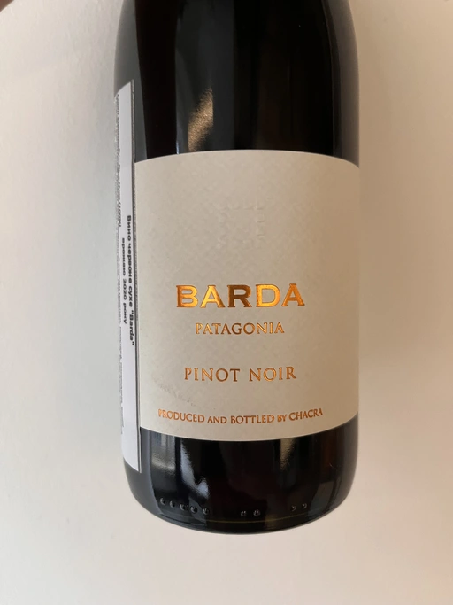

- Type
- Red Still, Dry
- Producer
- Bodega Chacra
- Vintage
- 2020
- Location
- Argentina, Río Negro
- Grapes
- Pinot Noir
- Alcohol
- 13
- Sugar
- NA
- Price
- 1130 UAH
- Cellar
- N/A
Ratings
2022-09-22 - 7.25
Ripe yet recognisable Pinot Noir. Ripe raspberry, strawberry, jam, and spices. Nothing fascinating, but well-made, round and jammy stuff. It lacks acidity and tannin. To drink over the next year or two. Unfortunately, it is overpriced.